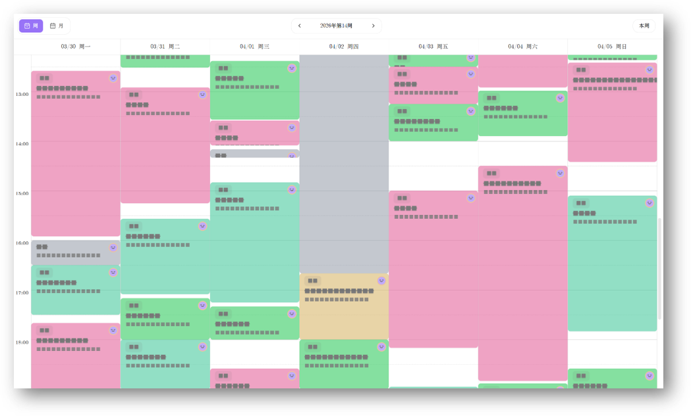
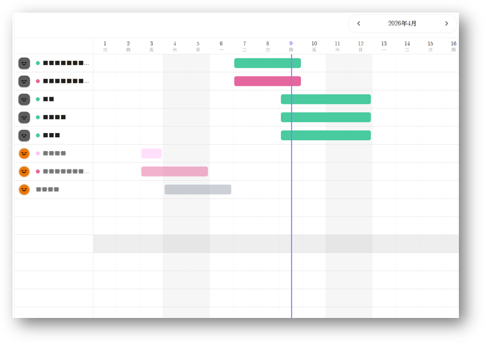
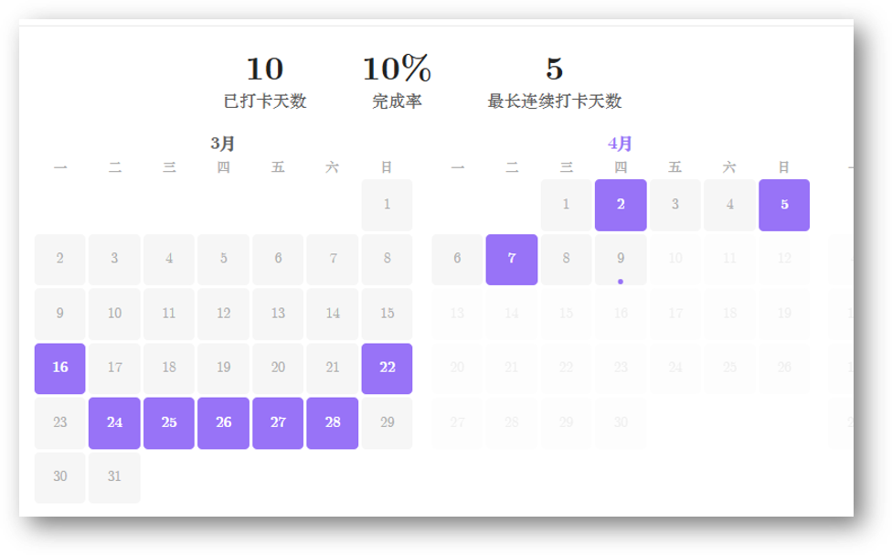
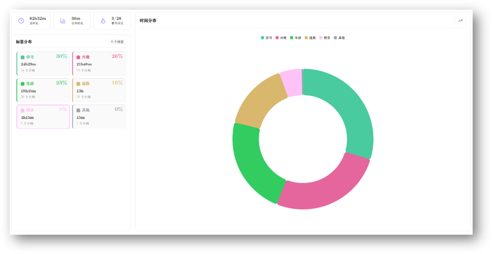

一款为高效生活量身打造的 Obsidian 插件。从日程规划到习惯打卡， 从数据统计到悬浮计时器，把碎片化的时间管理融入你的知识库。
深度融入 Obsidian 生态，让每一天都清晰可控
支持日 / 周 / 月 / 年四种视图模式，拖拽调整任务时间，直观查看每日安排。彩色标签让不同类型的任务一目了然。
管理跨日事件和里程碑，甘特图视图清晰展示事件时间线。支持标签分类和完成状态追踪，轻松掌控长期计划。
自定义习惯项目，每日一键打卡。热力图清晰展示坚持情况，帮助你养成良好习惯，记录成长轨迹。
自动统计每日时间分配，按标签分类汇总。饼图、柱状图多维度呈现，用数据驱动你的时间管理决策。
全局悬浮球一键计时，支持标签分类和快捷操作。径向菜单优雅交互，专注当下不打断工作流。
Markdown 原生编辑器，随时记录灵感和反思。与日程无缝整合，让日志成为你回顾一天的最佳方式。
点击选项卡切换不同功能的效果展示
可视化时间轴，拖拽安排每日任务
跨日事件时间线，全局掌控长期计划
热力图追踪，可视化你的坚持
多维度图表，用数据驱动决策



